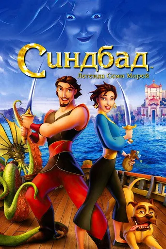

Синдбад: Легенда семи морей 2003
Мультфильм рассказывает об одном из многочисленных приключений известного аравийского моряка Синдбада. Приключение начинается тогда, когда Эрис, богиня Хаоса, крадет Книгу Мира, подставив тем самым Синдбада и сделав из него преступника. Намеревающийся доказать свою невиновность, а также спасти жизнь своего лучшего друга Протеуса Шейпершифера, моряк отправляется в царство Эрис, кишащее ужасными монстрами, такими как гигантские скорпионы, змеи и 40-футовые птицы, сделанные из льда и снега. Даже если Синдбад сможет обезвредить всех этих чудовищ, ему также придется иметь дело с магией Эрис, обладающей эффектом Яблока Раздора, которое имеет способность превратить друзей во врагов, когда оно брошено посреди них. Синдбаду помогает во всем Марина, подруга Протеуса.
Открыть в каталогеДанные и постеры принадлежат их правообладателям. Этот продукт использует TMDB API, но не одобрен и не сертифицирован TMDB.